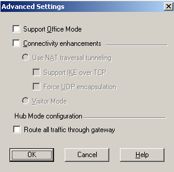
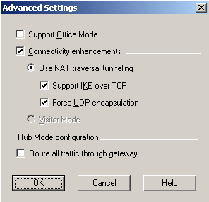
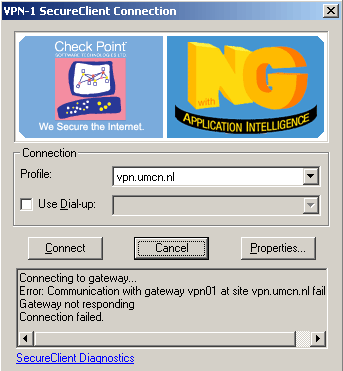
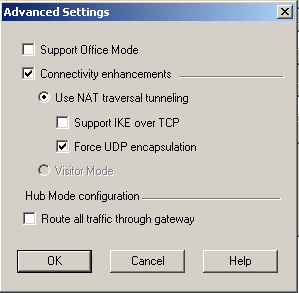
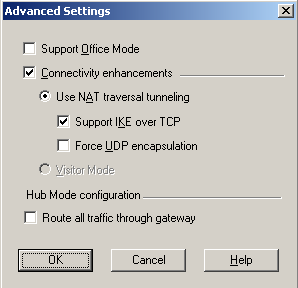
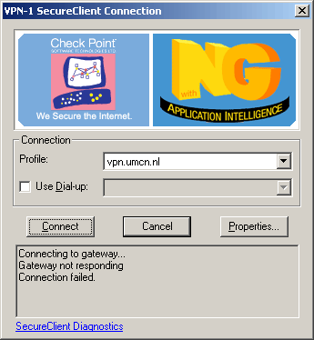

Allles uit, connectie lukt wel, maar geen verbinding met www.umcn.nl en netwerk drives

Alles aan: geen connectie, zie plaatje

Alleen UDP:connectie lukt wel, maar geen verbinding met www.umcn.nl en netwerk drives

alleen IKE: geen connectie
